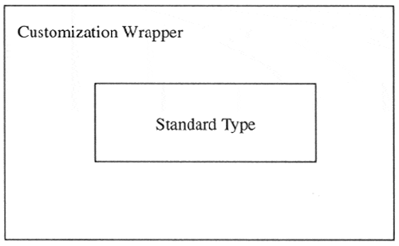

| < BACK | Make Note | Bookmark | CONTINUE > |
Delegation
Wrapping
"Wrapping" is a term you will hear often in the Python programming world. It is a generic moniker to describe the packaging of an existing object, whether it be a data type or a piece of code, adding new, removing undesired, or otherwise modifying existing functionality to the existing object.
The subclassing or derivation of a standard type in Python is not allowed; however, you can wrap any type as the core member of a class so that the new object's behavior mimics all existing behavior of the data type that you want, does not do what you do not want it to do, and perhaps does something a little extra. This is called "wrapping a type." In the Appendix, we will discuss how to extend Python, another form of wrapping.
Wrapping consists of defining a class whose instances have the core behavior of a standard type. In other words, it not only sings and dances now, but also walks and talks like our original type. Figure13-2 attempts to illustrate what a type wrapped in a class looks like. The core behavior of a standard type is in the center of the figure, but it is also enhanced by new or updated functionality, and perhaps even by different methods of accessing the actual data.
Figure 13.2. Wrapping a Type
Class Object (which behaves like a type)
You may also wrap classes, but this does not make as much sense because there is already a mechanism for taking an object and wrapping it in a manner as described above for a standard type. How would you take an existing class, mimic the behavior you desire, remove what you do not like, and perhaps tweak something to make the class perform differently from the original class? That process, as we discussed recently, is derivation. We wrap only types because they cannot be subclassed.
Implementing Delegation
Delegation is a characteristic of wrapping that you can utilize which simplifies the process with regards to dictating functionality.
Delegation is a form of wrapping which takes advantage of pre-existing functionality to maximize code reuse. Wrapping a type generally consists of some sort of customization to the existing type. As we mentioned before, this "tweaking" comes in the form of new, modified, or removed functionality compared to the original product. Everything else should "remain the same," or keep its existing functionality and behavior. Delegation is the process whereby all the updated functionality is handled as part of the new class, but the existing functionality is "delegated" to the default attributes of the object.
The key to implementing delegation is to override the __getattr__() method with code containing a call to the built-in getattr() function. Specifically, getattr() is invoked to obtain the default object attribute (data attribute or method) and return it for access or invocation. The way the special method __getattr__() works is that when an attribute is searched for, any local ones are found first (the customized ones). If the search fails, then __getattr__() is invoked, which then calls getattr() to obtain an object's default behavior.
In other words, when an attribute is referenced, the Python interpreter will attempt to find that name in the local namespace, such as a customized method or local instance attribute. If it is not found in the local dictionary, then the class namespace is searched, just in case a class attribute was accessed. Finally, if both searches fail, the hunt begins to delegate the request to the original object, and that is when __getattr__() is invoked.
Simple Example Wrapping Any Object
Let us take a look at an example. We present below a class which wraps nearly any object, providing basic functionality as string representations with repr() and str(). Additional customization comes in the form of the get() method, which removes the wrapping and returns the raw object. All remaining functionality is delegated to the object's native attributes as retrieved by __getattr__() when necessary.
Here's an example wrapping class:
class WrapMe:
def __init__(self, obj):
self.__data = obj
def get(self):
return self.__data
def __repr__(self):
return 'self.__data'
def __str__(self):
return str(self.__data)
def __getattr__(self, attr):
return getattr(self.__data, attr)
In our first example, we will use complex numbers, because of all Python's numeric types, complex numbers are the only one with attributes, data attributes as well as its conjugate() built-in method. Remember that attributes can be both data attributes as well as functions or methods. Again, we chose complex numbers because it is an example of a standard which has both attribute types. Here is an example with a complex number:
>>> wrappedComplex = WrapMe(3.5+4.2j) >>> wrappedComplex # wrapped object [repr()] [repr()] (3.5+4.2j) >>> wrappedComplex.real # real attribute 3.5 >>> wrappedComplex.imag # imaginary attribute 42.2 >>> wrappedComplex.conjugate() # conjugate() method (3.5–4.2j) >>> wrappedComplex.get() # actual object (3.5+4.2j)
Once we create our wrapped object type, we obtain a string representation, silently using the call to repr() by the interactive interpreter. We then proceed to access all three complex number attributes, none of which is defined for our class. All three accesses are delegated to the object's attributes via the getattr() method. The final access to our example object is to retrieve an attribute that is defined for our object, the get() method which returns the actual data object that we wrapped.
Our next example using our wrapping class uses a list. We will create the object, then perform multiple operations, delegating each time to list methods.
>>> wrappedList = WrapMe([123, 'foo', 45.67]) >>> wrappedList.append(\xd4 bar\xd5 ) >>> wrappedList.append(123) >>> wrappedList [123, 'foo', 45.67, 'bar', 123] >>> wrappedList.index(45.67) 2 >>> wrappedList.count(123) 2 >>> wrappedList.pop() 123 >>> wrappedList [123, 'foo', 45.67, 'bar']
Notice that although we are using a class instance for our examples, they exhibit behavior extremely similar to the data types which they wrap. Be aware, however, that only existing attributes can delegated.
Special behaviors which are not in a type's method list will not be accessible since they are not attributes. One example is the slicing operations of lists which are built-in to the type and not available as an attribute like the append() method for example. Another way of putting it is that the slice operator ( [ ] ) is part of the sequence type and is not implemented through the __getitem__() special method.
>>> wrappedList[3]
Traceback (innermost last):
File "<stdin>", line 1, in ?
File "wrapme.py", line 21, in __getattr__
return getattr(self.data, attr)
AttributeError: __getitem__
The AttributeError exception results from the fact that the slice operator invokes the __getitem__() method, and __getitem__() is not defined as a class instance method nor is it a method of list objects. Recall that getattr() is called only when an exhaustive search through an instance's or class's dictionaries fails to find a successful match. As you can see above, the call to getattr() is the one which fails, triggering the exception.
However, we can always cheat by accessing the real object [with our get() method] and its slicing ability instead:
>>> realList = wrappedList.get() >>> realList[3] 'bar'
You probably have a good idea now why we implemented the get() method—just for cases like this where we need to obtain access to the original object. We can bypass assigning local variable (realList) by accessing the attribute of the object directly from the access call:
>>> wrappedList.get()[3] 'bar'
The get() method returns the object which is then immediately indexed to obtain the sliced subset.
>>> f = WrapMe(open('/etc/motd'))
>>> f
<open file '/etc/motd', mode 'r' at 80e95e0>
>>> f.readline()
'Have a lot of fun…\012'
>>> f.tell()
21
>>> f.seek(0)
>>> print f.readline(),
Have a lot of fun…
>>> f.close()
>>> f
<closed file '/etc/motd', mode 'r' at 80e95e0>
Once you become familiar with an object's attributes, you begin to understand where certain pieces of information originate and are able to duplicate functionality with your newfound knowledge:
>>> print "<%s file %s, mode %s at %x>" % \ … (f.closed and 'closed' or 'open', "f.name", "f.mode", id(f.get())) <closed file '/etc/motd', mode 'r' at 80e95e0>
This concludes the sampling of our simple wrapping class. We have only just begun to touch on class customization with type emulation. You will discover that there are an infinite number of enhancements you can make to further increase the usefulness of your code. One such enhancement would be to add timestamps to objects. In the next subsection, we will add another dimension to our wrapping class: time.
Updating Our Simple Wrapping Class
Creation time, modification time, and access time are familiar attributes of files, but nothing says that you cannot add this type of information to objects. After all, certain applications may benefit from these additional pieces of information.
If you are unfamiliar with using these three pieces of chronological data, we will attempt to clarify them. The creation time (or "ctime") is the time of instantiation, the modification time (or "mtime") refers to the time that the core data was updated [accomplished by calling the new set() method], and the access time (or "atime") is the timestamp of when the data value of the object was last retrieved or an attribute was accessed.
Proceeding to updating the class we defined earlier, we create the module twrapme.py, given in Example 13.3.
How did we update the code? Well, first, you will notice the addition of three new methods: gettimeval(), gettimestr(), and set(). We also added lines of code throughout which update the appropriate timestamps based on the type of access performed.
The gettimeval() method takes a single character argument, either "c," "m," or "a," for create, modify, or access time, respectively, and returns the corresponding time that is stored as a float value. gettimestr() simply returns a pretty-printable string version of the time as formatted by the time.ctime() function.
Let us take a test drive of our new module. We have already seen how delegation works, so we are going to wrap objects without attributes to highlight the new functionality we just added.
Example 13.3. Wrapping Standard Types (twrapme.py)
Class definition which wraps any built-in type, adding time attributes; get(), set(), and string representation methods; and delegating all remaining attribute access to those of the standard type.
<$nopage>
001 1 #!/usr/bin/env python
002 2
003 3 from time import time, ctime
004 4
005 5 class TimedWrapMe:
006 6
007 7 def __init__(self, obj):
008 8 self.__data = obj
009 9 self.__ctime = self.__mtime = \
010 10 self.__atime = time()
011 11
012 12 def get(self):
013 13 self.__atime = time()
014 14 return self.__data
015 15
016 16 def gettimeval(self, t_type):
017 17 if type(t_type) != type('') or \
018 18 t_type[0] not in 'cma':
019 19 raise TypeError, \
020 20 "argument of 'c', 'm', or 'a' req'd"
021 21 return eval('self._%s__%stime' % \
022 22 (self.__class__.__name__, t_type[0]))
023 23
024 24 def gettimestr(self, t_type):
025 25 return ctime(self.gettimeval(t_type))
026 26
027 27 def set(self, obj):
028 28 self.__data = obj
029 29 self.__mtime = self.__atime = time()
030 30
031 31 def __repr__(self):# rep()
032 32 self.__atime = time()
033 33 return \xd4 self.__data\xd4
034 34
035 35 def __str__(self):# str()
036 36 self.__atime = time()
037 37 return str(self.__data)
038 38
039 39 def __getattr__(self, attr):# delegate
040 40 self.__atime = time()
041 41 return getattr(self.__data, attr)
042 <$nopage>
>>> timeWrappedObj = TimedWrapMe(932)
>>> timeWrappedObj.gettimestr('c')
'Wed Apr 26 20:47:41 2000'
>>> timeWrappedObj.gettimestr('m')
'Wed Apr 26 20:47:41 2000'
>>> timeWrappedObj.gettimestr('a')
'Wed Apr 26 20:47:41 2000'
>>> timeWrappedObj
932
>>> timeWrappedObj.gettimestr('c')
'Wed Apr 26 20:47:41 2000'
>>> timeWrappedObj.gettimestr('m')
'Wed Apr 26 20:47:41 2000'
>>> timeWrappedObj.gettimestr('a')
'Wed Apr 26 20:48:05 2000'
You will notice that when an object is first wrapped, the creation, modification, and last access times are all the same. Once we access the object, the access time is updated, but not the others. If we use set() to replace the object, the modification and last access times are updated. One final read access to our object concludes our example.
>>> timeWrappedObj.set('time is up!')
>>> timeWrappedObj.gettimestr('m')
'Wed Apr 26 20:48:35 2000'
>>> timeWrappedObj
'time is up!'
>>> timeWrappedObj.gettimestr('c')
'Wed Apr 26 20:47:41 2000'
>>> timeWrappedObj.gettimestr('m')
'Wed Apr 26 20:48:35 2000'
>>> timeWrappedObj.gettimestr('a')
'Wed Apr 26 20:48:46 2000'
Wrapping a Specific Object with Enhancements
The next example represents a class which wraps a file object. Our class will behave exactly in the same manner as a regular file object with one exception: In write mode, only strings in all capital letters are written to the file.
The problem we are trying to solve here is for a case where you are writing text files whose data is to be read by an old mainframe computer. Many older style machines are restricted to uppercase letters for processing, so we want to implement a file object where all text written to the file is automatically converted to uppercase without the programmer's having to worry about it. In fact, the only noticeable difference is that rather than using the open() built-in function, a call is made to instantiate the capOpen class. Even the parameters are exactly the same as for open().
Example 13.4 represents that code, written as capOpen.py. Let us take a look at an example of how to use this class:
Example 13.4. Wrapping a File Object (capOpen.py)
This class extends on the example from Python FAQ 4.48, providing a file-like object which customizes the write() method while delegating the rest of the functionality to the file object.
<$nopage> 001 1 #!/usr/bin/env python 002 2 003 3 from string import upper 004 4 005 5 class capOpen: 006 6 def __init__(self, fn, mode='r', buf=-1): 007 7 self.file = open(fn, mode, buf) 008 8 009 9 def __str__(self): 010 10 return str(self.file) 011 11 012 12 def __repr__(self): 013 13 return 'self.file' 014 14 015 15 def write(self, line): 016 16 self.file.write(upper(line)) 017 17 018 18 def __getattr__(self, attr): 019 19 return getattr(self.file, attr) 020 <$nopage>
>>> f = capOpen('/tmp/xxx', 'w')
>>> f.write('delegation example\n')
>>> f.write('faye is good\n')
>>> f.write('at delegating\n')
>>> f.close()
>>> f
<closed file '/tmp/xxx', mode 'w' at 12c230>
As you can see above, the only call out of the ordinary is the first one to capOpen() rather than open(). All other code is identical to what you would do if you were interacting with a real file object rather than a class instance which behaves like a file object. All attributes other than write() have been delegated to the file object. To confirm the success of our code, we load up the file and display its contents. (Note that we can use either open() or capOpen(), but chose only capOpen() because we have been working with this example.)
>>> f = capOpen('/tmp/xxx')
>>> allLines = f.readlines()
>>> for eachLine in allLines:
… print eachLine,
…
DELEGATION EXAMPLE
FAYE IS GOOD
AT DELEGATING
| Last updated on 9/14/2001 Core Python Programming, © 2002 Prentice Hall PTR |
| < BACK | Make Note | Bookmark | CONTINUE > |